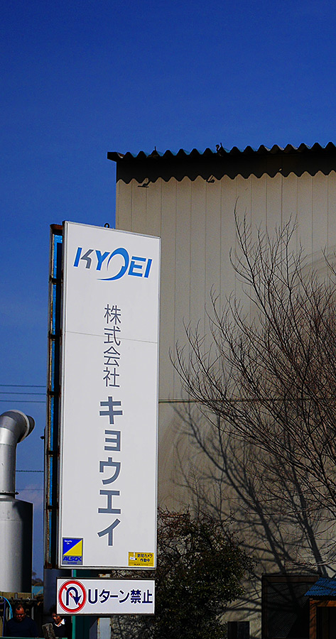
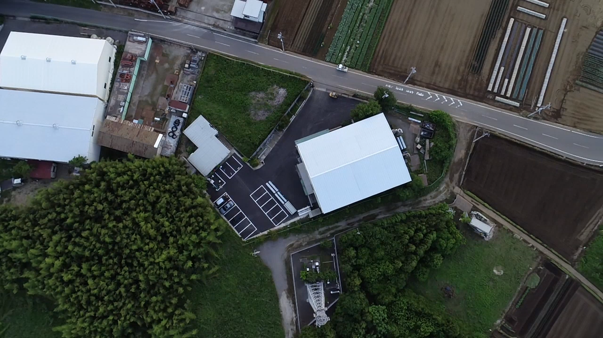

社名 |
株式会社キョウエイ |
|---|---|
英文社名 |
Kyoei Inc. |
主な事業内容 |
ステンレスの研磨および加工
鋼材の切断 |
本社所在地 |
〒276-0001 千葉県八千代市小池288-1 |
代表者名 |
武藤 敦 |
従業員数 |
31名 |
主要取引銀行 |
東京三菱UFJ銀行 船橋支社
千葉銀行 新八千代支店
千葉興行銀行 新八千代支店 |
資本金 |
¥10,000,000 |

八千代工場 敷地2,633㎡ 工場587㎡
| 厚み | 幅 | 長さ | ||
|---|---|---|---|---|
| 角パイプ自動研磨機 | 2機 | 12～150㎜ | 12～150㎜ | 6m |
| フラットバー自動研磨機 | 2機 | 3～150㎜ | 20～150㎜ | 6m |
| 角、丸、兼用自動研磨機 | 1機 | 3～140㎜ | 20～140㎜ | 6m |
| 大型角パイプ自動研磨機 | 1機 | 30～300㎜ | 30～300㎜ | 6m |
| トラバース平面自動研磨機 | 1機 | 3～200㎜ | 15～200㎜ | 6m |
| 台型研磨機 | 1機 | 2～100㎜ | 10～100㎜ | 6m |
| 丸型センターレス研磨機 | 1機 | 5Φ～89.1Φ | 6m | |
| 両頭バフレース機 | 1機 | |||
| ドレッサー | 1機 | |||
| 天井クレーン | 4機 | 2.8t 3機 | 1.0t 1機 |
鎌ヶ谷工場 敷地1,830㎡ 工場542.5㎡
| 厚み | 幅 | 長さ | ||
|---|---|---|---|---|
| アングル自動研磨機 | 3機 | 3～ 15㎜ | 20×125㎜ | 6m |
| フラットバー自動研磨機 | 3機 | 3～150㎜ | 20～150㎜ | 6m |
| 天井クレーン | 3機 | 2.8t | ||
| 帯鋸切断機 | 1機 | 20～250㎜ | 20～250㎜ | 6m |
| 丸鋸切断機 | 1機 | 5～100㎜ | 5～100㎜ | 6m |
| ゴルフ練習場 |
車両
| トラック | 1台 | 8.5t |
|---|---|---|
| フォークリフト | 1台 | 3.0t |
1982年9月 東京都江戸川区にて、有限会社共栄ステンレス研磨工業設立
1984年4月 メーカー様より依頼を受けて角パイプの研磨を開始
1984年9月 工場を拡張し、アングル全面研磨を本格的に開始
1985年4月 工場を拡張し、角パイプ及びフラットバーの自動研磨を開始
1987年5月 業務拡張に伴い、本社、工場、共に千葉県八千代市島田台に移転
1987年6月 アングル内面、外面、コバ面の同時研磨を可能とし、品質と生産能 の大幅アップを実現
1989年5月 角パイプ専用自動研磨機12Hと6H、2機を導入し＃400角パイプ 大幅増産を実現
1991年2月 八千代市大和田新田に第二工場が竣工
1996年7月 現在の八千代市小池に本社工場が竣工し移転
2004年10月 アングル専用工場を千葉県船橋市鈴身町に開設
2005年9月 資本金を1,000万円に増資、株式会社に改組し同時に社名 株式会社キョウエイに変更
2007年11月 切断・精密矯正専用工場を船橋市鈴身町に開設し切断・矯正を開始
2013年12月 鎌ヶ谷工場を開設、第二工場を千葉県鎌ヶ谷市へ移転
2018年4月 代表取締役社長に武藤敦が就任
2020年3月 鎌ヶ谷工場にフルオートメーション設備導入、無人での研磨が実現
平素は、格別のご愛顧を賜り厚く御礼申し上げます。弊社は昭和57年創業以来ステンレス鋼材の研磨加工一筋に38年目を迎えることができました。この間、お取引先様の暖かいご支援とご指導をいただき、又、真面目で 熱心な従業員に恵まれ「より良い製品を、より早く、より安く」をモットーに今日に至っております。
これまで培ってきた技術やノウハウ等の良い伝統を受け継ぎながら、現代に合わせたオートメーション化を進めてきたことで「低コスト」で「短納期」そして「安定した品質」を実現しております。 これまで全国数多くの建築物にもご使用いただき、街中で私たちが加工した製品を見かける機会も多くあります、それが私たちの喜びであり、やりがいに繋がっております。
私たちはこのステンレスという素晴らしい素材の付加価値を高めるべく新たな知識を吸収し、微力ながらも街を「輝かせる」一助となれるよう従業員共々努力いたして まいります。今後共、益々のご支援とご鞭撻と共に、御下命下さりますようお願い申し上げます。
代表取締役社長 武藤 敦